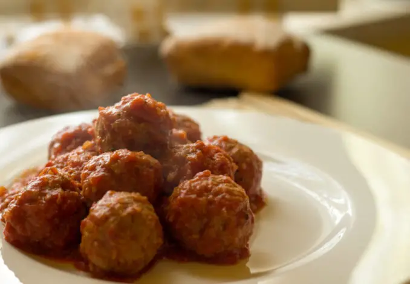

Odin Recipes
Meatballs

Description
The meatballs with tomato sauce are a classic
“grandma’s dish” that brings together everyone, perfect
for a cheerful and tasty family meal.
The meatballs are a second course of the Italian tradition but
each family has its own unforgettable and precious recipe.
Ingredients
- Stale bread: 3 slices
- Milk: ½ glass
- Minced beef: 1.76 lb (800 gr)
- Grated Parmesan cheese: 4 tablespoons
- Egg: 1
- Seed Oil to fry: 6.34 cups (1.5 l)
Steps
-
To make the Grandma’s meatballs deprive the bread slices from the crust,
break them and let them soften in a bowl with milk. Let them rest and
then mash with a fork. If there is excess of milk, squeeze the crumb and
eliminate it. Add to the bread the minced meat, the Parmesan cheese, the
egg and season with salt. Knead well with your hands until you get a
homogeneous mixture.
-
Take the mixture and form with the hands round meatballs of the size of
an egg.
-
Heat the oil in a pan and brown the meatballs on all sides for a couple
of minutes.
-
Add the tomato pulp with the concentrate and a pinch of salt. Mix well,
cover and cook for 20-25 minutes over low heat. Halfway through cooking,
turn them so that they cook evenly and without sticking.
- Transfer the Grandma’s meatballs on a dish and serve hot.